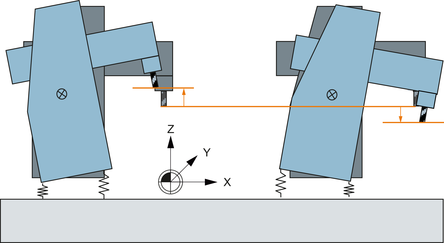

Benefits
The nodding compensation enhances precision for machining of the workpiece by compensating for compliance within the machine and is beneficial for traveling column machines, for example, in that it improves machining accuracy and surface quality.
Call the function at the control in the "Commissioning" → softkey "NC" → softkey "Nodding compensation" operating area. The softkey is not shown until the option has been set.
Example
Nodding motion in the Z axis when accelerating in the X axis:
Definition of compliance
From the acceleration or deceleration of an axis as the cause for nodding - and the deviation of an axis as compliance at the position - a factor can be determined, which describes the interrelationship between the accelerating or decelerating axis motion, and the position deviation in the compensated axis. No mass is included in the calculation. The compliance factor is the inverse value of the stiffness.
Measuring procedure
There are two techniques that can be selected for determining compliance:
Milling standardized workpiece and selecting the optimum milling path
For a standardized workpiece, a cycle is available to mill several milling paths with different compliance factors. The compliance factor can be empirically determined based on the workpiece surface quality.
For the cycle settings, you can also select face milling for the workpiece in order to carry out several tests with different compliance factors on one workpiece.
Determining positional deviations using a probe
The position deviation is precisely measured at different positions. Based on this, the compliance factor can be calculated once the acceleration or deceleration that has been achieved is known.